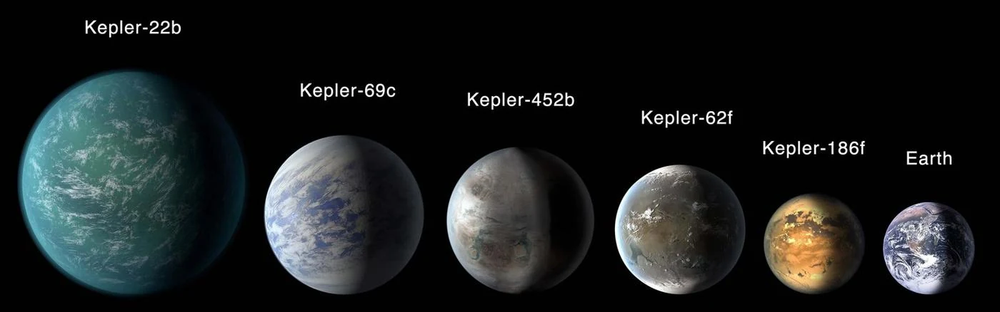

CASE STUDY / MACHINE LEARNING
Finding exoplanets with ML
Comparing five classifiers on Kepler observations, with attention to imbalance and model confidence.

01 / THE QUESTION
Start with the problem.
How reliably can machine learning distinguish confirmed exoplanets, candidates and false positives in Kepler observations?
02 / THE PROCESS
From raw data to a useful solution.
Combined Kepler Objects of Interest and DR25 stellar data, performed exploratory analysis and feature engineering, and compared Random Forest, XGBoost, SVM, KNN and a multilayer perceptron.
03 / THE OUTCOME
What the work showed.
Tree-based models gave the strongest overall performance in the published comparison. Analysing class-level results and confidence revealed limitations hidden by overall accuracy.
04 / THE PERSPECTIVE
Interpret the result in context.
Class imbalance and overconfident errors affect reliability. Predictions are an analytical classification exercise and do not independently confirm a planet.